Back that un-draws, and changing words on the Chart
Mock-ups for John, 20 October 2026. These are real screens from Flowcharter with the new parts painted on top, so the charts are drawn exactly as the app draws them. Wording marked “draft” is mine, for you to change.
1. Back un-draws the chart (step by step)
Each press of Back takes the chart back one step. Below, someone has got as far as “Pay the deposit” and presses Back five times.
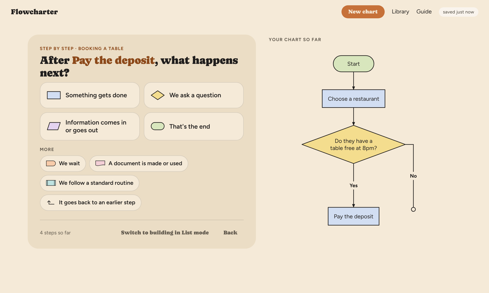
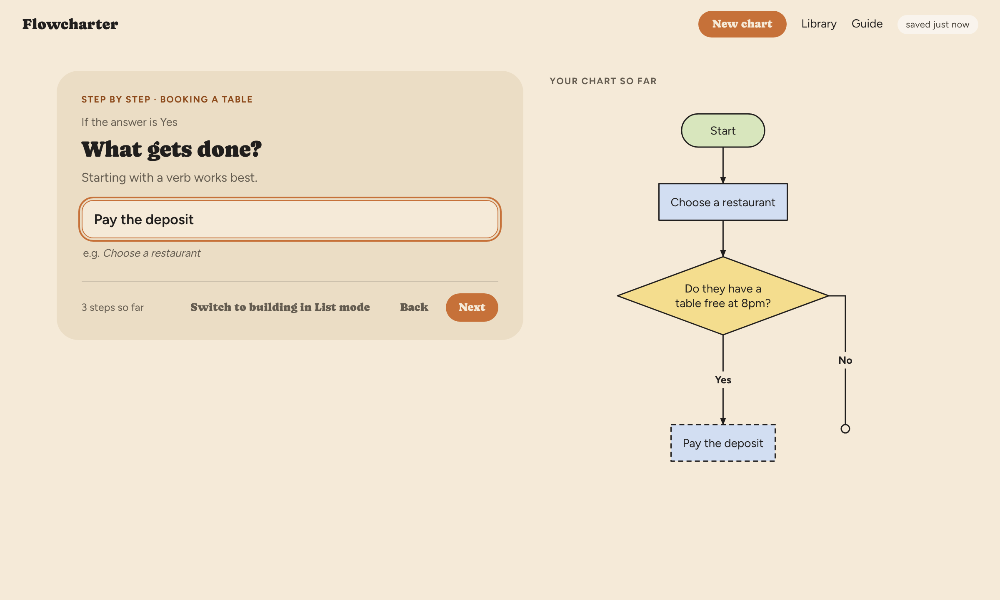
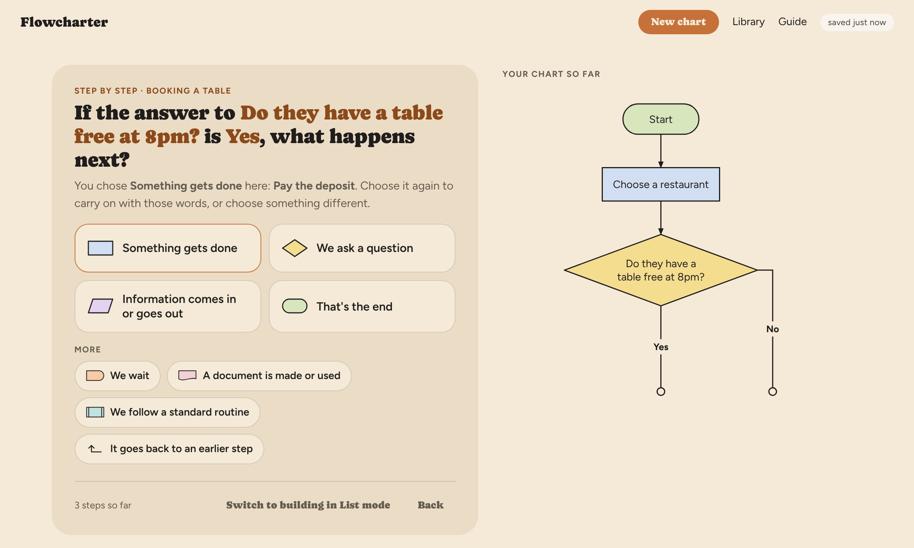
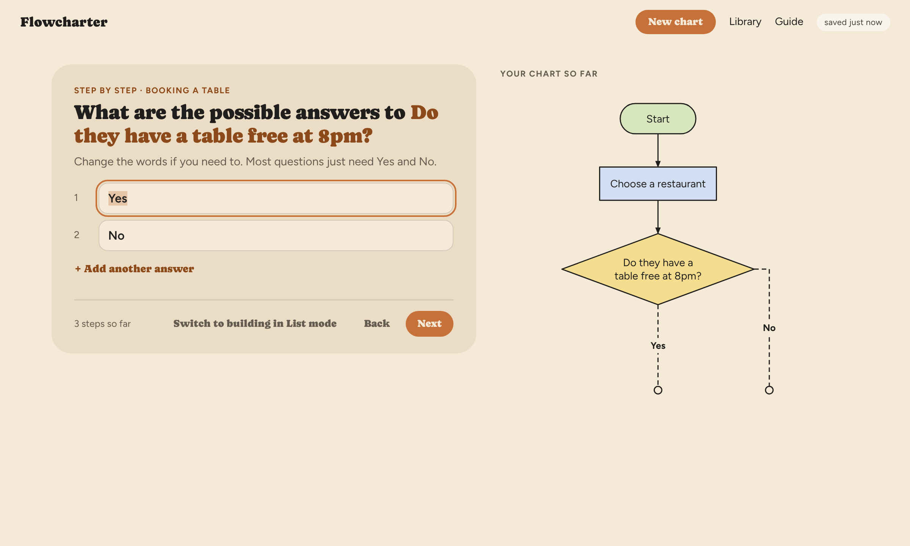
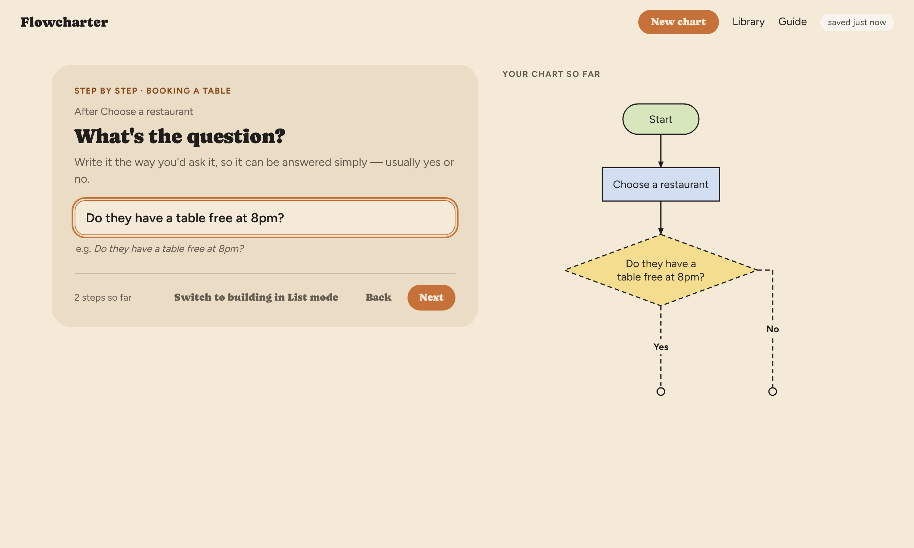
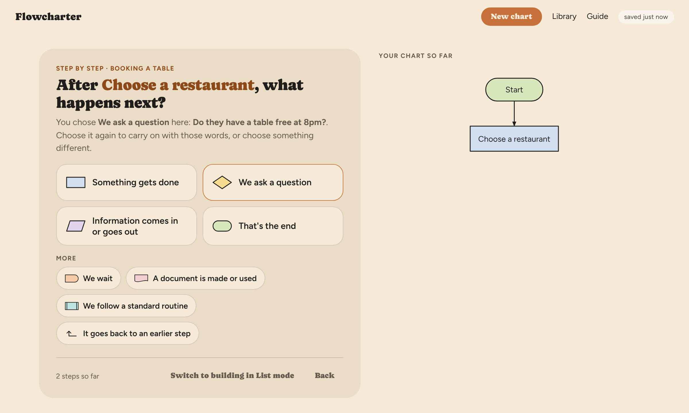
On a phone
The card is the same. Peek shows the chart as it now stands.
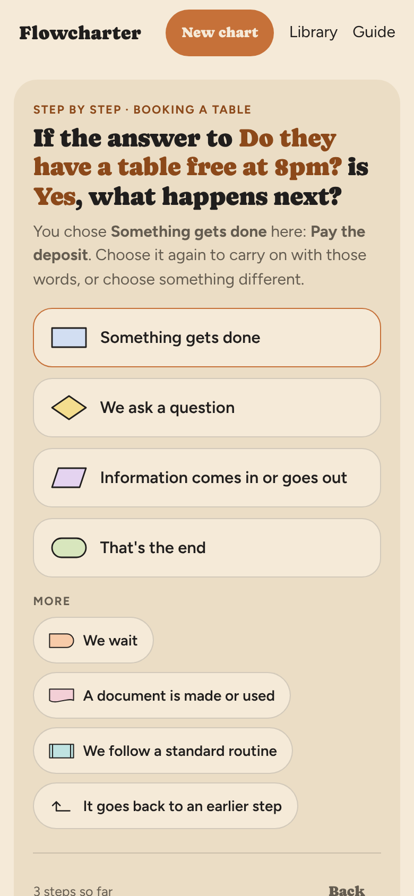
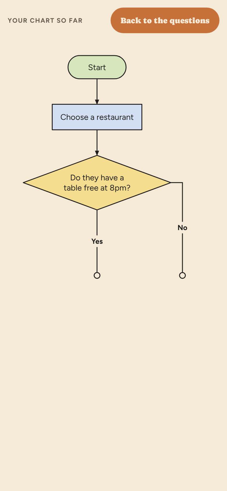
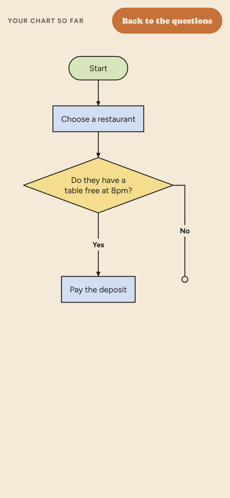
What else changes
- Back always undoes the card before. To go forward again you answer each card again. Only the card you've just gone back to offers your earlier words.
- Back only undoes what was done on the cards this time. Coming to the cards from the List, the first card still has no Back, as now. Steps made in the List are never undone by Back.
- Two things become unnecessary and would be removed: the card that says a question “already has answers leading to two steps” (fresh look 2.3), and the note saying “It goes back to an earlier step” isn't available (2.5). Back can no longer reach a step with later steps still hanging off it.
- If Back undoes a “goes back to an earlier step” line, the line disappears and the open circle returns.
- The phone's own back gesture is unchanged: it still goes to the Library.
1a Wording for the line on a card you've come back to (draft): “You chose Something gets done here: Pay the deposit. Choose it again to carry on with those words, or choose something different.”
1b The dashed outline for a step that's being written. Without it, some presses of Back would seem to do nothing to the chart, because the step being written is drawn while you type (as you asked on 16 October).
2. Changing a box's words on the Chart
On the Chart screen, clicking (or tapping) a box lets you change its words. Only the words change: the shape stays the same, even if the new words would have made the List guess a different shape.
On a computer
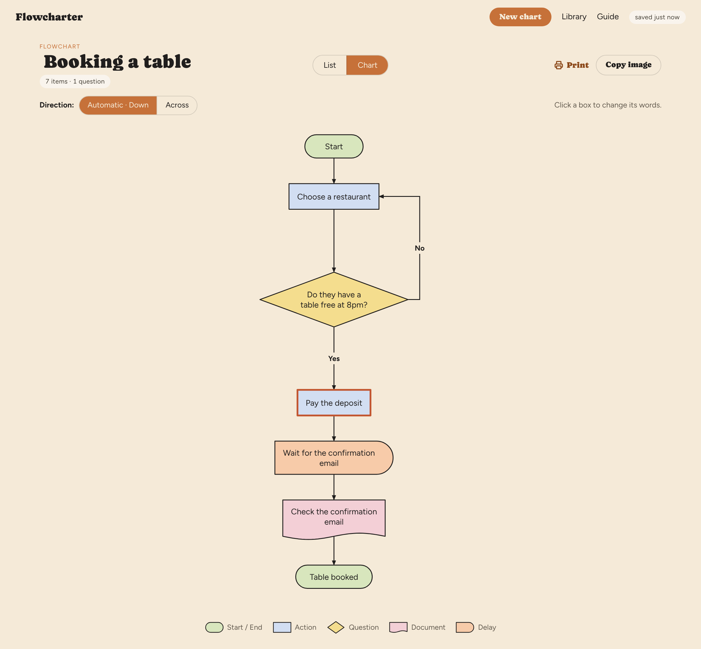
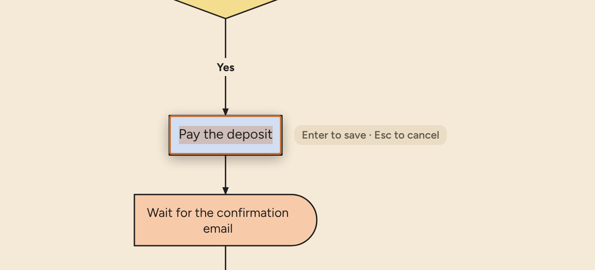
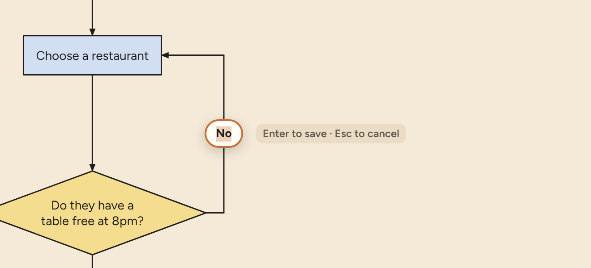
On a phone
Boxes on a phone are often shrunk, and too small to type into comfortably. So tapping a box outlines it and opens a panel at the top of the screen, where the keyboard won't cover it.
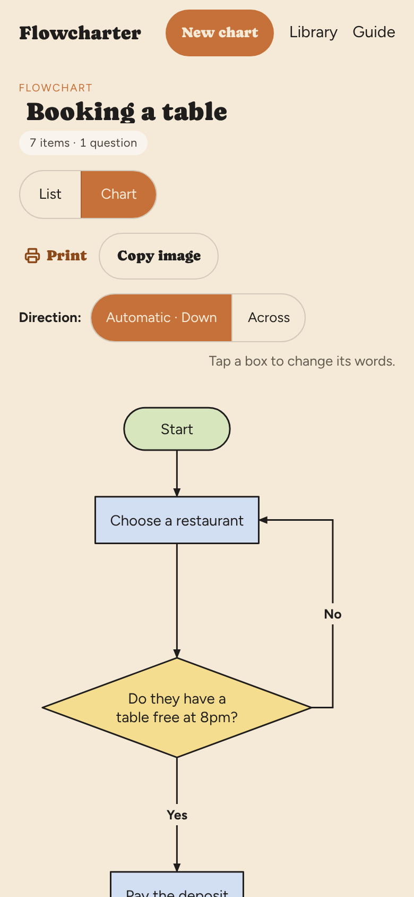
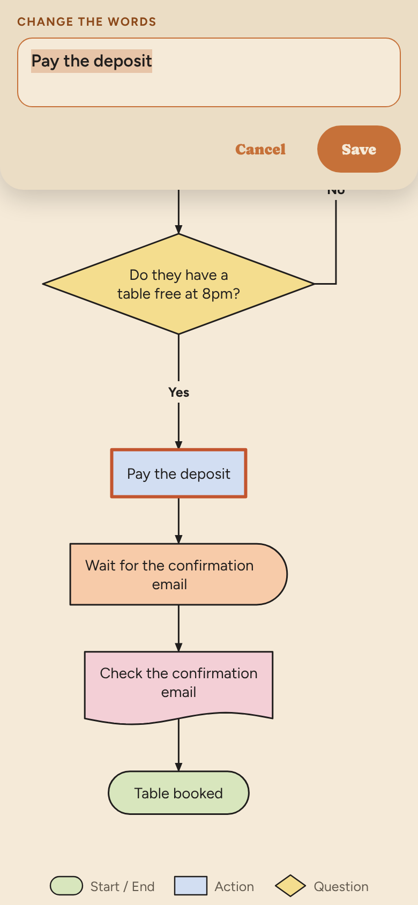
The details
- After saving, the chart redraws. Longer or shorter words change a box's size, so boxes can shift a little.
- Leaving the box empty keeps the old words. The limits are the List's: 80 characters for a step, 40 for an answer.
- Changes are saved straight away, as in the List, and show in the List too.
- Not editable: open circles (there's nothing to edit), the chart beside the cards, Full screen on a phone, and anything printed or copied as an image (the outline and hint never appear there).
2a The hint wording, on the computer and the phone.
2b The panel on the phone: its title (draft: “Change the words”) and its place at the top of the screen.
2c Whether Full screen on a phone should allow editing too. My suggestion is no: it's for looking.